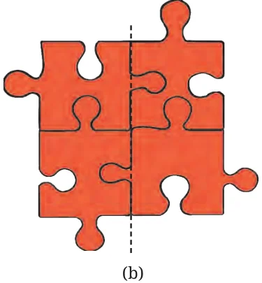
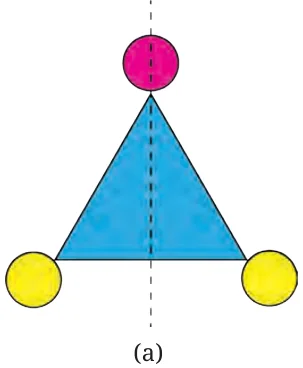

Figure (a) shows the picture of a blue triangle with a dotted line. What if you fold the triangle along the dotted line? Yes, one half of the triangle covers the other half completely. These are called mirror halves!


What about Figure (b) with the four puzzle pieces and a dotted line passing through the middle? Are they mirror halves? No, when we fold along the line, the left half does not exactly fit over the right half. A line that cuts a figure into two parts that exactly overlap when folded along that line is called a line of symmetry of the figure.